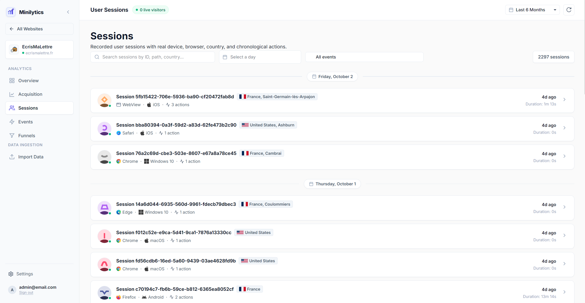
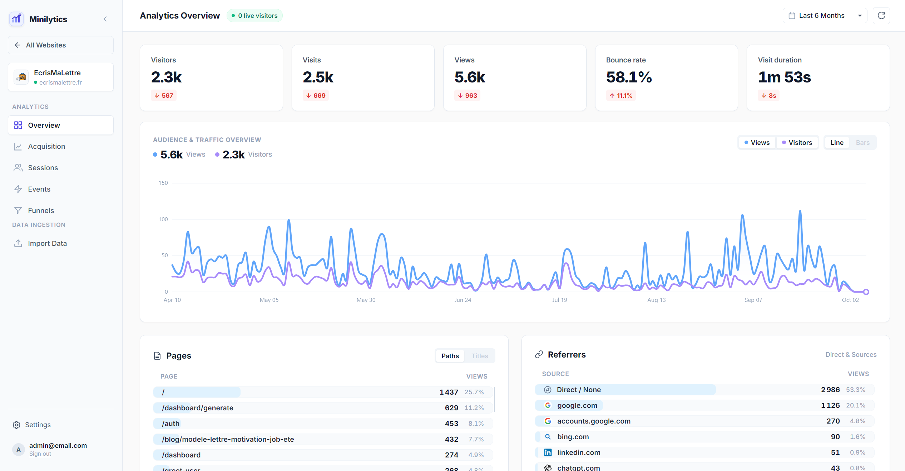
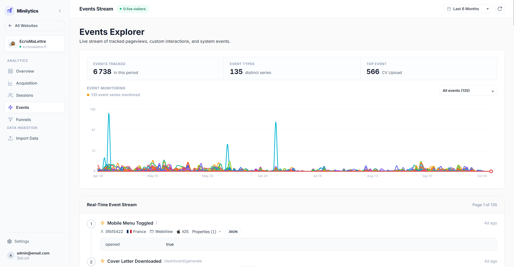
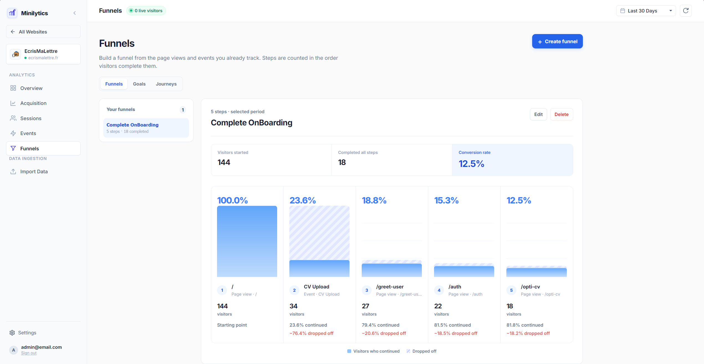
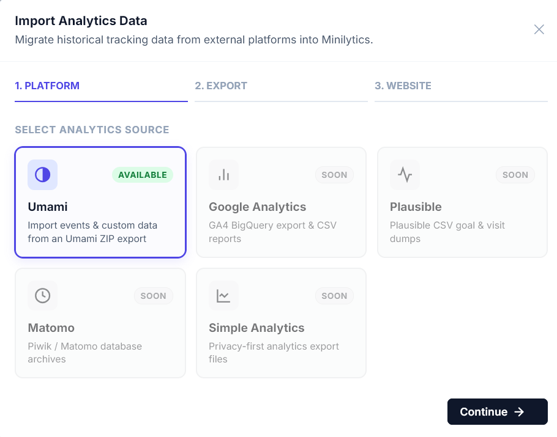

Sessions
Track each visitor's journey in detail with device, location, and chronological page views.
Identify top referrers, entry and exit pages, and session duration without setting a single client-side cookie.

Beautiful, GDPR-friendly self-hosted analytics engine built for speed and privacy. Powered by lightweight PHP with no cookies or heavy background processes.

Minilytics comes with all the essential features to understand how your site is used, without being bloated.
Track each visitor's journey in detail with device, location, and chronological page views.
Identify top referrers, entry and exit pages, and session duration without setting a single client-side cookie.

Monitor clicks, downloads, and custom interactions as they happen with an interactive activity stream.
Follow event evolution over time to spot trends, measure feature engagement, and analyze spikes with zero overhead.

Define key conversion goals and track complete multi-step visitor journeys from first touch to completion.
Visualize where users drop off at each step, compare conversion rates across journeys, and optimize your flow to turn visits into results.

Migrate your existing analytics seamlessly without losing a single historical event.
Import past pageviews, custom events, and visitor sessions directly from Umami via the web dashboard or CLI. Support for Google Analytics (GA4), Plausible, Matomo, and Simple Analytics is actively planned.

Useful analytics, without handing your visitor data to someone else.
Strict mode works without client-side storage.
No Node.js runtime or database server.
Run it wherever standard PHP is available.
Download the archive and run Minilytics in minutes on your local machine or server. No Node.js runtime or database server required.
# Download & unpack archive
$ curl -LO https://github.com/axthauvin/minilytics/releases/latest/download/minilytics.tar.gz
$ tar -xzf minilytics.tar.gz